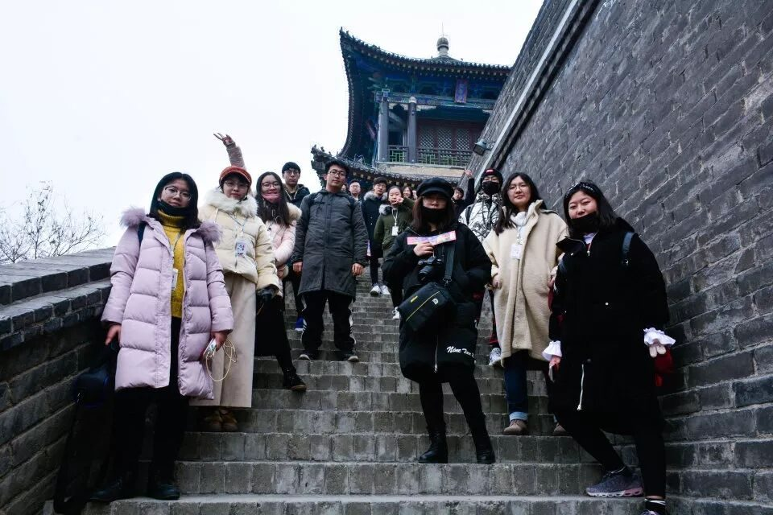
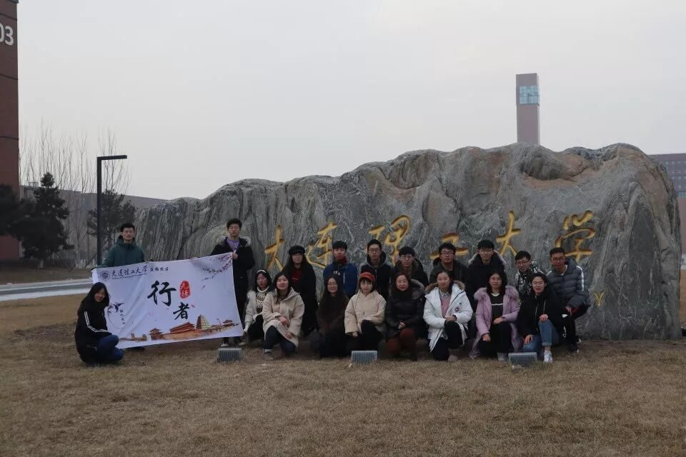
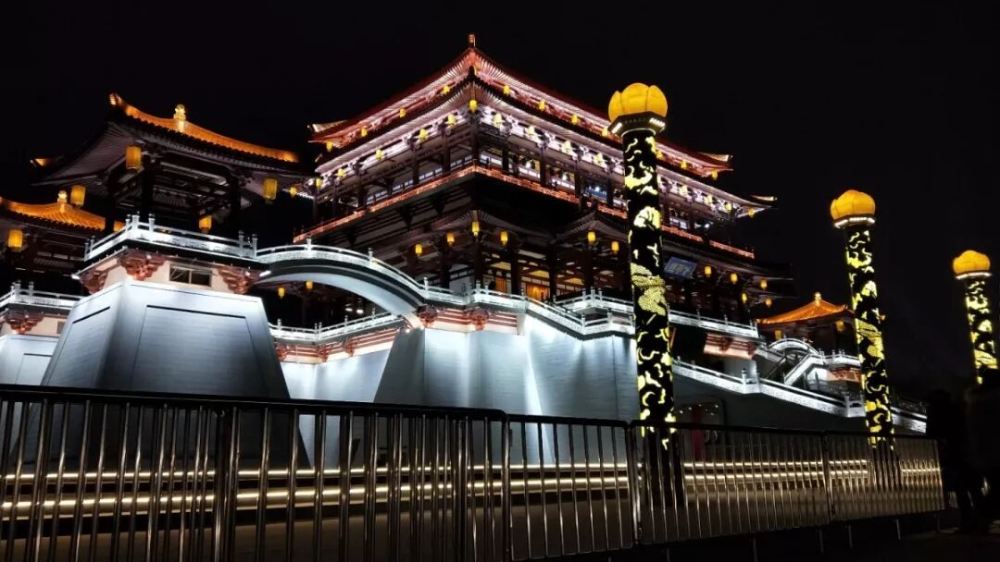
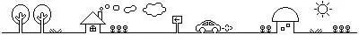
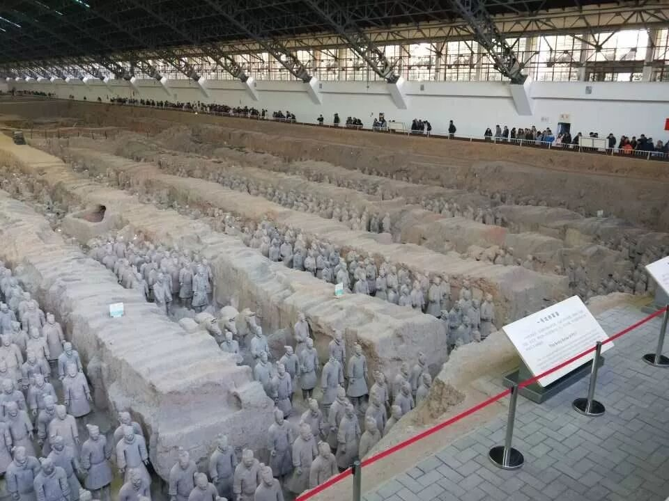

【秦简拓语·三】心里想的就该努力前去尝试

尝试
try ╲

责任
源于热爱
实践的前期，我作为宣传组的一员，以官Q说说、微信推送和行者无疆微博的形式，一点点的向所有人阐述这西安古都的文化魅力。
这是我第一次做社会实践，我很重视这次经历，我本身就是那种只要是自己想要的喜欢的，就绝对会不惜一切去完成、去争取的人。
在实践的前期准备阶段，实话说是真的很忙，一方面是来自期末考试的压力，一方面也是要忙于实践团的事情。
可能真的是出于对行者无疆的喜欢吧，我还是会选择在第一时间去完成我的任务，我觉得这不仅仅是喜欢而已，更多的是要对自己喜欢的东西担负起自己应尽的责任。
缘分
妙不可言

实践期间，短短七天，在结束了出发前的导师动员后，我们便踏上了前往我们心向许久的西安的火车。
一路上尽管累点困点，但是总能有一阵阵我们的笑声让我从中摆脱；对我来说，早起真的是一件难事，为了那多睡的几分钟，我选择放弃去吃一份肉夹馍，以至于路上的时候第一个会饿的总是我。晚归后的集体会议，让我更多的了解到了大家的想法，看到了自己盲区的地方，每一次集会都成了我学习的最好机会；每天可能最幸福的便是回到青旅，舒服的洗个澡睡一觉，看着微信上两万多的步数，会真实的意识到我也走进了行者的一列，一边在心烦着明天还要走多远的路，另一边却又是对明天的行者路途充满了期待。

不管是出于什么样的理由加入到行者一列，是对文化的热爱，还是来敷衍了事，此时此刻的我是真的爱上了这个团队，爱上了文化旅途的行者们。我们一行人从陌生走到相知相识，从同学变成知心朋友，从路人走向了行者的队伍。
缘分，真的妙不可言。
❒

来到西安，不得不说，兵马俑真的是极其壮观，因为是出于对文物和周围人民的保护，还有很多的兵马俑坑未被挖掘，但仅仅这三个俑坑就足以让我震撼许久。
从俑身的制作到细节的雕刻，不得不感叹中华千年文化的精深。
短短七天之旅，
收获下来的却不能够用言语来表达。
一份来自十九个人的友情，
一颗热爱文化的赤心，
一个在文化调研路上不停前进的团队。
行者无疆，一期一会；
此刻的别离，只为下次更好的相遇！
感谢你带给我的这些点滴。
来源丨行者无疆实践团
文字丨牛直达
排版丨王洁
审核丨潘雯雯 邓子孚
行者无疆实践团
QQ：2758025831

随行者一起认识世界
长按二维码关注